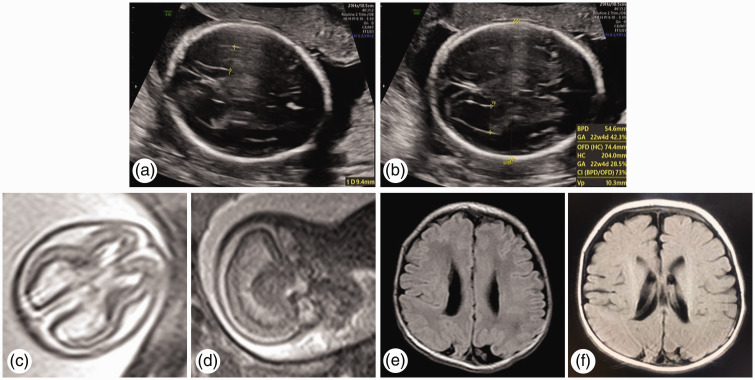
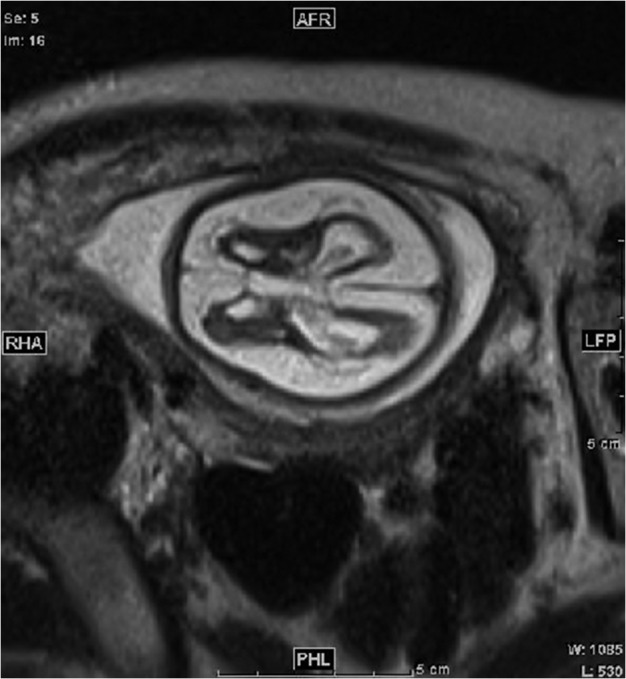
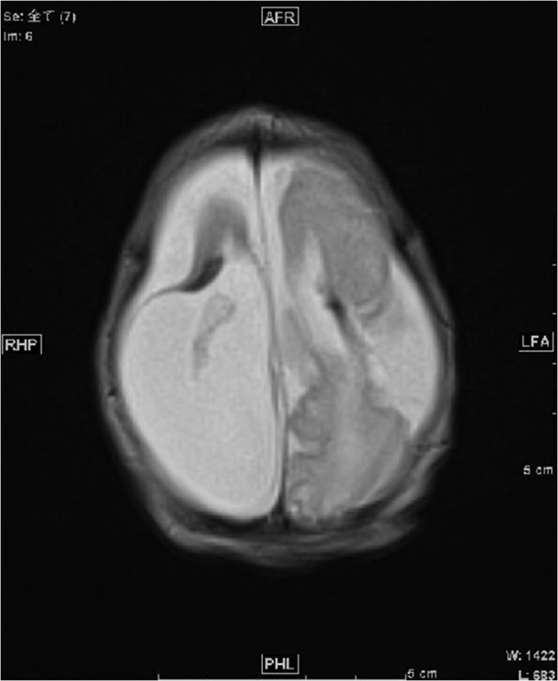

588 — Một thai chết trong song thai một ối (MCMA): tổn thương não–thận thai còn lại & theo dõi / Single intrauterine fetal demise in monoamniotic twins
Tags: pattern:song-thai-mot-oi pattern:single-IUFD pattern:ton-thuong-nao-thai vung:thai-nhi vung:nao-thai vung:than-thai protocol:MRI-thai protocol:SA-Doppler-MCA score:ventriculomegaly
Mức chắc chắn (certainty): tổng hợp y văn (literature synthesis) — số liệu từ đoàn hệ 68 thai kỳ một bánh nhau có một thai chết (PMC10378013), đoàn hệ 90 thai kỳ (PMC12598004), khuyến cáo SMFM 01/2026 (PMC13344341) và ACOG/SMFM (tổng hợp trong PMC12255925); ca nguyên văn dùng cho quiz: PMC12378532 (Zhang L et al., 2025) và PMC5241712 (Machino H et al., 2017) — ảnh lấy từ chính các ca này, không phải ca của nhóm biên soạn.
1. Tổng quan bệnh học – cơ chế hình ảnh
1.1. Chuyện gì xảy ra trong 60 giây "thai kia ngừng tim"
- Song thai một ối (monochorionic monoamniotic, MCMA) chiếm ~3% song thai một bánh nhau và ~0,02% tất cả thai kỳ (SMFM 01/2026, PMC13344341). Hai thai nằm cùng một buồng ối, gần như luôn quấn dây rốn — đây là lý do tử vong chu sinh cao.
- Khi một thai chết (single intrauterine fetal demise, s-IUFD), huyết áp trong tuần hoàn thai chết tụt về 0. Hai tuần hoàn vẫn nối với nhau qua nối động mạch–động mạch (arterio-arterial) và tĩnh mạch–tĩnh mạch (veno-venous) trên bánh nhau chung. Chênh áp đột ngột khiến thai còn lại truyền máu ồ ạt sang thai đã chết (feto-fetal hemorrhage) → giảm thể tích, tụt huyết áp, thiếu máu cấp.
- TẠI SAO não tổn thương chứ không chỉ "thiếu máu"? Tụt huyết áp làm giảm tưới máu não → thiếu máu–thiếu oxy (ischemic-hypoxic) ở vùng phân thủy (watershed): chất trắng quanh não thất, hạch nền, vỏ não. Sau khi huyết áp hồi phục, tái tưới máu (reperfusion) gây stress oxy hóa, phù và chết tế bào lan rộng. Tổn thương xảy ra ngay lúc thai kia chết, không phải vài tuần sau — nên thời điểm chụp quyết định thấy được hay không.
- TẠI SAO thận cũng tổn thương? Thận thai là cơ quan "nhạy huyết áp": giảm tưới máu → hoại tử vỏ thận (renal cortical necrosis) → thận không phát triển → thiểu sản thận (renal hypoplasia) và thiểu ối. Ca nguyên văn PMC5241712 ghi nhận AFI 1,8 cm lúc 26 tuần, sau đó tăng lại 15 cm lúc 34 tuần — nghĩa là thiểu ối do thận có thể hồi phục một phần, đừng vội kết luận "thận hỏng vĩnh viễn".
- TẠI SAO phổi bị ảnh hưởng? Thiếu máu–thiếu oxy cấp + hít sặc + viêm tại chỗ có thể gây tổn thương phổi kéo dài ở trẻ sơ sinh (ca PMC12378532: trẻ khó thở, tổn thương phổi viêm kéo dài, xuất viện ngày thứ 10).
- Mẹ cũng có nguy cơ: mô thai chết giải phóng thromboplastin → đông máu nội mạch rải rác (DIC) ở mẹ và thai còn lại; kèm nguy cơ tiền sản giật, nhiễm trùng, băng huyết sau sinh. Ca PMC12108043 ghi nhận D-dimer mẹ tăng tới 9,2 µg/mL sau khi một thai chết.
1.2. Vì sao hình ảnh não thay đổi theo thời gian (vật lý T1/T2/DWI)
- 0–72 giờ: phù tế bào (cytotoxic edema) → DWI sáng, ADC tối; T2 có thể còn bình thường. Chụp quá sớm dễ âm tính giả.
- 3–7 ngày: phù lan rộng → T2/FLAIR tăng tín hiệu, mất phân biệt xám–trắng, não thất có thể bắt đầu giãn.
- 2–6 tuần: mô hoại tử được thay bằng dịch → hang hóa/nang hóa (encephalomalacia), giãn não thất do mất mô (ex vacuo), teo vỏ não, mỏng thể chai do thoái hóa Waller (Wallerian degeneration).
- TẠI SAO T2 HASTE là chuỗi xung chủ lực ở thai: HASTE/SSFSE thu ảnh cực nhanh (~1–2 giây/lát), "đóng băng" chuyển động thai; dịch não tủy rất sáng trên T2 nên dễ đo não thất, thấy nang hóa và mất nhu mô. Lát 3–4 mm đủ để thấy tổn thương > 2–3 mm.
- TẠI SAO DWI có ích dù không thấy tổn thương rõ: nghiên cứu 43 thai còn lại sau s-IUFD cho thấy ADC giảm ở chất trắng trán–đỉnh–thái dương và tiểu não hai bên so với song thai khỏe và thai đơn (PMC11877868) — tức là vi tổn thương cấu trúc có thể xuất hiện trước khi có bất thường thấy được trên T2.
- Xuất huyết: máu bán cấp (methemoglobin) sáng trên T1, tối trên T2* do hiệu ứng từ tính; đừng nhầm với canxi hóa (canxi tối trên T1 và T2, rất tối trên SWI).
1.3. Ngưỡng định lượng phải nhớ (cửa 1 Argon)
- Tần suất & tiên lượng MCMA: tử vong chu sinh trước đây 30–70%; khi theo dõi tích cực sau 24–26 tuần, giảm còn 8–11% (PMC9836963). Đoàn hệ Karolinska 22 thai kỳ: 35/44 (80%) trẻ sống sinh, 97% (35/36) sống nếu đạt 24 tuần, không có tử vong sơ sinh; tuổi thai sinh trung bình 32,5 tuần (PMC9836963).
- Tổn thương não ở thai còn lại sau s-IUFD (một bánh nhau): 20,6% (14/68) có tổn thương não, trong đó 8,8% (6/68) tổn thương trước sinh và 11,8% (8/68) sau sinh (PMC10378013). Thai chết tự phát có tổn thương não 37,5% (6/16) so với 15,4% (8/52) sau can thiệp (p = 0,07).
- Yếu tố dự báo: tuổi thai lúc thai chết OR 1,21/tuần (95% CI 1,04–1,41); thai còn lại bị thiếu máu (MCA-PSV cao) OR 9,27 (95% CI 1,50–57,12) (PMC10378013).
- Đoàn hệ 90 thai kỳ (7 MCMA): trong 69 thai kỳ tiếp tục, 10 trẻ có tổn thương não, 2 trẻ (2,9%) bất thường thần kinh; sinh non 62,3%, nhập NICU 50,7%, tuổi thai sinh 35,1 ± 3,3 tuần (PMC12598004). Tổn thương não tăng theo tuổi thai lúc thai chết; nguy cơ thấp nhất khi thai chết trước 25 tuần 6 ngày.
- Thời điểm MRI: chụp ít nhất 3 tuần sau s-IUFD, hoặc sớm hơn nếu siêu âm nghi tổn thương (PMC10378013). Siêu âm 2 tuần/lần trong tháng đầu, sau đó hàng tháng (ISUOG/SEGO, dẫn trong PMC10378013).
- Ngưỡng não thất: sừng sau não thất bên > 10 mm = giãn não thất; ≥ 12–15 mm = giãn nặng, tiên lượng xấu hơn. Ca PMC5241712 có giãn não thất nặng + teo nhu mô + thiểu sản thể chai ở 25–26 tuần.
- Thận: chiều dài thận thai bình thường theo tuổi thai; ca PMC5241712 lúc 30 tuần: 14 mm và 17,8 mm (bình thường 28–40 mm), sau sinh 18 mm và 31 mm (bình thường 39–51 mm) → thiểu sản thận hai bên.
- Thời điểm sinh MCMA không biến chứng: 32 0/7 – 34 0/7 tuần (ACOG/SMFM; tổng hợp tại PMC12255925). Sau s-IUFD, thời điểm sinh cá thể hóa nhưng không nên kéo dài quá mốc này nếu thai còn lại ổn định.
2. Mẫu hình + chẩn đoán phân biệt theo vị trí (gamut)
2.1. Mẫu hình cốt lõi — "một thai đã chết + thai còn lại có não thất giãn"
- Bối cảnh bắt buộc: thai kỳ MCMA đã xác định (xem 586); có một thai không tim, thai còn lại tim đập.
- Chuỗi hình ảnh điển hình: thai chết ở tuần 17–22 → vài tuần sau thai còn lại giãn não thất nhẹ → tiến triển teo nhu mô, nang hóa, porencephaly, teo thể chai; kèm thiểu ối/thận nhỏ; trẻ sinh ra đầu nhỏ (microcephaly), chậm phát triển.
- Mẹ: có thể D-dimer tăng, giảm tiểu cầu, tăng men gan, tăng huyết áp — phải theo dõi DIC/tiền sản giật song song.
2.2. Gamut "thai còn lại có bất thường não sau khi một thai chết"
- Xuất huyết thai–thai cấp (acute feto-fetal hemorrhage) — hay nhất khi thai chết đột ngột trong MCMA; MCA-PSV > 1,5 MoM lúc chẩn đoán; tổn thương đối xứng/không đối xứng ở chất trắng, hạch nền, vỏ não.
- TAPS (twin anemia–polycythemia sequence) — thiếu máu mạn, MCA-PSV cao ở một thai, không có cơn tụt áp cấp; tổn thương chất trắng mạn tính, thường không có porencephaly lớn.
- sIUGR / TTTS — chênh cân nặng, Doppler bất thường, thiểu ối/đa ối; tổn thương não do thiếu máu–thiếu oxy mạn.
- Nhiễm trùng bào thai (CMV, toxoplasmosis) — vôi hóa quanh não thất (CMV) hoặc vôi hóa lan tỏa (toxo), đầu nhỏ, không liên quan thời điểm thai kia chết; CMV là nguyên nhân thiểu sản tiểu não mắc phải.
- Bất thường di truyền/chuyển hóa — không có mốc thời gian rõ, có thể kèm dị tật khác; không giải thích được bằng "một thai chết".
- Tổn thương do sinh non (PVL/IVH) — xảy ra sau sinh, ổ quanh não thất, germinal matrix; không có trước sinh.
- Ngạt chu sinh/HIE — bệnh cảnh sinh khó, pH thấp, hạ huyết áp; tổn thương hạch nền/đồi thị hoặc vùng phân thủy.
- Porencephaly do nguyên nhân khác — đột quỵ thai, rối loạn đông máu, chấn thương, nhiễm trùng; cần loại trừ bằng bối cảnh.
2.3. Định vị tổn thương — đọc theo "3 tầng"
- Tầng vỏ–dưới vỏ: mất phân biệt xám–trắng, vỏ mỏng, đa nang hóa (multicystic encephalomalacia) khi nặng.
- Tầng chất trắng quanh não thất: T2 tăng tín hiệu, giảm thể tích, mỏng thể chai; đây là vùng phân thủy nên nhạy với tụt huyết áp.
- Tầng hạch nền–đồi thị: tổn thương đối xứng gợi ý thiếu máu–thiếu oxy cấp; một bên gợi ý nhồi máu khu trú.
- Ngoài não: thận nhỏ/tăng echogenicity, bàng quang nhỏ, AFI thấp, phổi tăng echogenicity; tìm thêm bất thường tim (suy tim cung lượng cao) nếu thai còn lại phù.
3. Bảng so sánh phân biệt (ma trận đối chiếu)
| Thực thể (entity) | Hình ảnh điển hình (US/MRI) | Chốt vào (rule-in) | Chốt loại (rule-out) | Gợi ý xác nhận |
|---|---|---|---|---|
| Xuất huyết thai–thai cấp sau s-IUFD | Thai còn lại: giãn não thất tiến triển, teo nhu mô, porencephaly, có thể phù/thận nhỏ; MCA-PSV > 1,5 MoM ngay sau khi thai kia chết | Mốc thời gian trùng khớp: bất thường não xuất hiện sau khi một thai chết + MCA-PSV cao + thiếu máu | Không có mốc thời gian, bất thường não có trước khi thai kia chết; không thiếu máu | Siêu âm 2 tuần/lần tháng đầu; MRI ≥ 3 tuần sau s-IUFD; MCA-PSV; DWI/ADC |
| TAPS | MCA-PSV tăng ở một thai, giảm ở thai kia; bánh nhau dày, không có cơn tụt áp; tổn thương chất trắng mạn | Chênh MCA-PSV > 1,5 MoM giữa hai thai + không có thai chết đột ngột | Có một thai chết cấp + phù/thận nhỏ → nghi xuất huyết cấp hơn | Doppler MCA-PSV lặp lại; MRI não thai còn lại |
| CMV bào thai | Vôi hóa quanh não thất, đầu nhỏ, giãn não thất, thiểu sản tiểu não, tăng echogenicity quanh não thất | Vôi hóa + đầu nhỏ + không liên quan mốc thai kia chết | Không vôi hóa, tổn thương đúng sau mốc s-IUFD → ít nghĩ CMV | PCR CMV dịch ối; MRI não; siêu âm hình thái |
| Toxoplasmosis bào thai | Vôi hóa lan tỏa (đặc biệt hạch nền), giãn não thất, đầu nhỏ | Vôi hóa lan tỏa + huyết thanh mẹ dương tính | Vôi hóa quanh não thất đơn thuần + bối cảnh s-IUFD → ít nghĩ toxo | Huyết thanh mẹ; PCR dịch ối; MRI |
| PVL do sinh non | Ổ quanh não thất T2 sáng, giảm thể tích chất trắng, thường sau sinh; có thể nang hóa | Tiền sử sinh non + ổ quanh não thất + không có bất thường trước sinh | Bất thường đã có trước sinh, không tương ứng vùng quanh não thất → loại PVL đơn thuần | MRI sau sinh tại tuổi thai tương đương đủ tháng |
| Porencephaly do nguyên nhân khác | Hang dịch thông với não thất hoặc màng não, vỏ mỏng; có thể một bên | Hang dịch + mất nhu mô khu trú | Không có mốc s-IUFD, không thiếu máu, có yếu tố khác (đột quỵ, đông máu) | MRI T1/T2/DWI; siêu âm Doppler; xét nghiệm đông máu |

Ca PMC12378532: (a,b) siêu âm 22 tuần 4 ngày — giãn nhẹ sừng sau não thất bên; (c,d) MRI thai; (e,f) MRI sau sinh — giãn não thất và teo nhu mô. Nguồn: Zhang L et al., J Int Med Res 2025, CC BY-NC 4.0.3.1. Ba câu hỏi chốt khi nhìn ảnh
- Có đúng là MCMA không? Một bánh nhau, không thấy vách, hai dây rốn quấn nhau — nếu nghi ngờ, xem lại 8–14 tuần (xem 586).
- Bất thường não có trước hay sau khi thai kia chết? So phim cũ và mốc thai chết; đây là chốt nguyên nhân.
- Có thiếu máu cấp không? MCA-PSV > 1,5 MoM, phù, thận nhỏ, AFI thấp — giúp phân biệt xuất huyết cấp với bất thường bẩm sinh.
4. Protocol chụp + hệ phân độ/điểm chuẩn hóa
4.1. Siêu âm theo dõi sau s-IUFD
- Tần suất: 2 tuần/lần trong tháng đầu, sau đó hàng tháng (ISUOG/SEGO); nhiều trung tâm làm 1–2 lần/tuần giai đoạn 24–34 tuần vì nguy cơ thai còn lại tử vong.
- Nội dung mỗi lần: sinh trắc (BPD, HC, AC, FL), đo sừng sau não thất bên (bình thường ≤ 10 mm), độ dày vỏ não, echogenicity chất trắng, MCA-PSV, Doppler động mạch rốn, AFI, bàng quang, siêu âm tim thai nếu phù.
- BPP/NST: khởi động từ 32 tuần với MCMA không biến chứng (ACOG/SMFM), nhưng cá thể hóa sớm hơn sau s-IUFD.
- Corticosteroid: 24–34 tuần khi dự kiến sinh trong 7 ngày (betamethasone 12 mg × 2 liều cách 24 giờ, hoặc dexamethasone theo phác đồ địa phương) — giảm IVH/RDS.
4.2. MRI thai — "chụp đúng lúc mới thấy"
- Thời điểm: ≥ 3 tuần sau s-IUFD; chụp sớm nếu siêu âm thấy bất thường (giãn não thất, mất nhu mô, phù).
- Máy/chuỗi xung: 1,5 T (3 T nếu có); T2 HASTE/SSFSE lát 3–4 mm, 3 mặt phẳng; T1 (xuất huyết), DWI/ADC (phù tế bào), SWI nếu nghi chảy máu.
- Đo: đường kính sừng sau, thể tích não thất, độ dày vỏ, thể tích chất trắng, đường kính thể chai; so với bảng tuổi thai.
- Kết luận cần ghi: có/không giãn não thất, teo nhu mô, nang hóa/porencephaly, tổn thương hạch nền, xuất huyết, bất thường thể chai; mức độ và vị trí để tư vấn tiên lượng.
4.3. MRI sau sinh
- Thời điểm: tuổi thai tương đương đủ tháng (term-equivalent) hoặc sớm hơn nếu có triệu chứng; chụp lại sau 3–6 tháng nếu tổn thương tiến triển.
- Chuỗi xung: T1, T2, FLAIR, SWI, DWI; đo chu vi đầu, thể tích não, não thất.
- Giá trị: xác định porencephaly, teo vỏ, mỏng thể chai, tổn thương chất trắng — là cơ sở tư vấn phát triển thần kinh (bại não, động kinh, chậm phát triển).
4.4. Flowchart quản lý sau khi một thai chết trong MCMA
flowchart TD
A[MCMA + một thai chết] --> B{Tuổi thai ≥ 32 tuần?}
B -->|Có| C[Hội chẩn: sinh trong 24–48 giờ<br/>corticosteroid nếu chưa đủ liều]
B -->|Không| D[Theo dõi nội trú/ngoại trú<br/>siêu âm + MCA-PSV + BPP]
D --> E{Xuất hiện bất thường não,<br/>thiếu máu nặng hoặc suy thai?}
E -->|Có| F[Cân nhắc sinh sớm<br/>sau corticosteroid]
E -->|Không| G[MRI thai ≥ 3 tuần sau s-IUFD]
G --> H{Thấy tổn thương não?}
H -->|Có| I[Tư vấn tiên lượng<br/>kế hoạch sinh 32–34 tuần<br/>theo dõi thần kinh sau sinh]
H -->|Không| J[Tiếp tục theo dõi<br/>sinh 32–34 tuần]
C --> K[MRI sau sinh tại tuổi thai tương đương đủ tháng]
F --> K
I --> K
J --> K
4.5. Theo dõi mẹ
- Xét nghiệm: công thức máu, tiểu cầu, fibrinogen, D-dimer, men gan, creatinine, protein niệu; theo dõi DIC (giảm tiểu cầu + fibrinogen thấp + D-dimer cao).
- Huyết áp/protein niệu: tầm soát tiền sản giật — có thể xuất hiện sau khi thai chết.
- Sau sinh: kiểm tra nhau và thai chết (giải phẫu bệnh nếu gia đình đồng ý), tư vấn nguy cơ tái phát và kế hoạch thai kỳ sau.
5. Biến thể bình thường và cạm bẫy
- "Giãn não thất nhẹ" có thể thoáng qua: ca PMC12378532 chỉ giãn nhẹ từ 19 tuần nhưng sau sinh vẫn có tổn thương; không được kết luận "nhẹ nên lành" khi chưa chụp MRI đúng thời điểm.
- Thiểu ối có thể hồi phục: AFI 1,8 cm → 15 cm trong ca PMC5241712; đừng dựa vào một lần đo để tiên lượng thận.
- Chụp MRI quá sớm: trước 3 tuần có thể bình thường vì tổn thương chưa nang hóa; nếu nghi cao, chụp lại.
- Nhầm MCMA với MCDA "giả một ối" (pseudomonoamniotic do vỡ vách/rách vách): tìm dấu "T" ở giai đoạn sớm, hai túi noãn hoàng; nếu bỏ sót sẽ đánh giá sai nguy cơ.
- Nhầm thai chết bị ép (fetus papyraceus) với TRAP/acardiac: TRAP có dòng chảy ngược trong khối và tim bơm; thai chết không có dòng ngược, có hình thái thai co nhỏ.
- Nhầm thiểu sản thận với IUGR: thận nhỏ + AFI thấp nhưng BPD/AC có thể bình thường; đo chiều dài thận theo tuổi thai và theo dõi AFI.
- Bỏ sót tổn thương phổi: trẻ có thể khó thở, thâm nhiễm phổi dù não chỉ "giãn nhẹ"; đọc phim ngực sau sinh và theo dõi hô hấp.
- Sai thời điểm chụp sau sinh: MRI ngay ngày đầu có thể chưa thấy rõ porencephaly; chụp term-equivalent và lặp lại nếu cần.
6. Tự lượng giá — Blind Quiz
Ca 1 — Thai kỳ MCMA, một thai ngừng tim ở 17 tuần 2 ngày. Nhìn ảnh, mô tả trước khi mở đáp án.
- Gợi ý lâm sàng: mẹ 39 tuổi, khỏe; thai còn lại được theo dõi từ lúc thai kia ngừng tim.
- Câu hỏi: (1) Hai bất thường chính trên siêu âm 22 tuần 4 ngày là gì? (2) MRI sau sinh cho thấy gì? (3) Cơ chế nào giải thích tổn thương não và phổi?
Bấm để hiện đáp án (findings + chẩn đoán)
- Findings: (a,b) siêu âm 22 tuần 4 ngày — giãn nhẹ sừng sau não thất bên hai bên (đo được trên ảnh); (c,d) MRI thai — giãn não thất, mất thể tích nhu mô; (e,f) MRI sau sinh — giãn não thất và teo nhu mô não, phù hợp tổn thương thiếu máu–thiếu oxy.
- Chẩn đoán: tổn thương não thai còn lại sau một thai chết trong MCMA, do xuất huyết thai–thai cấp và thiếu máu–thiếu oxy; kèm tổn thương phổi viêm kéo dài ở trẻ sơ sinh.
- Vì sao: nối mạch bánh nhau chung → thai còn lại truyền máu sang thai chết → tụt huyết áp → thiếu máu vùng phân thủy → nang hóa/teo não.
- Nguồn ảnh: Zhang L et al., J Int Med Res 2025 (PMC12378532), Fig. 1; CC BY-NC 4.0.
Ca 2 — Thai kỳ MCMA, quấn dây rốn ở 20 tuần, một thai lưu ở 21 tuần. MRI thai ở 25–26 tuần.

- Gợi ý lâm sàng: thai còn lại phù nhẹ, MCA-PSV 42 cm/s (> 1,5 MoM) lúc 21 tuần; AFI 1,8 cm lúc 26 tuần.
- Câu hỏi: (1) Mô tả 3 bất thường trên MRI? (2) Vì sao thận cũng bị ảnh hưởng? (3) Tiên lượng và kế hoạch theo dõi?
Bấm để hiện đáp án (findings + chẩn đoán)
- Findings: giãn não thất nặng, teo nhu mô não, thiểu sản thể chai; kèm thiểu ối và thận hai bên nhỏ (14 mm/17,8 mm lúc 30 tuần so với bình thường 28–40 mm).
- Chẩn đoán: tổn thương não–thận thai còn lại sau s-IUFD trong MCMA; cơ chế giảm thể tích–tụt huyết áp lúc thai kia chết, dẫn tới hoại tử vỏ thận và thiểu sản thận.
- Tiên lượng: nguy cơ porencephaly, bại não, chậm phát triển; cần MRI sau sinh, theo dõi thần kinh – thận – hô hấp.
- Nguồn ảnh: Machino H et al., Oxf Med Case Reports 2017 (PMC5241712), Fig. 1; CC BY-NC 4.0.
Ca 3 — Trẻ sơ sinh sau sinh 36 tuần, mẹ có MCMA và một thai lưu ở 21 tuần. MRI đầu sau sinh.

- Gợi ý lâm sàng: đầu nhỏ, chu vi đầu dưới bách phân vị 3; không co giật trong 48 giờ đầu.
- Câu hỏi: (1) Dấu hiệu chính? (2) Phân biệt với PVL và hang màng não? (3) Ý nghĩa tiên lượng?
Bấm để hiện đáp án (findings + chẩn đoán)
- Findings: porencephaly — hang dịch lớn thông với não thất bên, mất nhu mô vùng trán–đỉnh, đầu nhỏ, giãn não thất bên còn lại; thể chai mỏng.
- Chẩn đoán: di chứng tổn thương não thiếu máu–thiếu oxy sau s-IUFD trong MCMA (không phải PVL đơn thuần — PVL thường ổ quanh não thất nhỏ, hai bên, ở trẻ sinh non).
- Tiên lượng: nguy cơ bại não, động kinh, chậm phát triển; cần theo dõi phát triển, vật lý trị liệu sớm, MRI lặp lại.
- Nguồn ảnh: Machino H et al., Oxf Med Case Reports 2017 (PMC5241712), Fig. 5; CC BY-NC 4.0.
Bài liên quan chéo
- 586 – Song thai một ối (MCMA): chẩn đoán, quấn dây rốn & thời điểm sinh
- 566 – Song thai: màng đệm–màng ối & TTTS/TAPS
- 568 – TRAP & thai acardiac
- 655 – HIE sơ sinh & dị dạng bẩm sinh thần kinh
- 654 – Tổn thương não sơ sinh không do ngạt
- 567 – Sàng lọc lệch bội & dấu hiệu mềm
Ảnh
588_single-IUFD_US-MRI_PMC12378532-Fig1-CCBYNC.jpg— US + MRI trước/sau sinh (PMC12378532, Fig. 1), CC BY-NC 4.0.588_nao-thai-con-lai_MRI_PMC5241712-Fig1-CCBYNC.jpg— MRI thai 25 tuần (PMC5241712, Fig. 1), CC BY-NC 4.0.588_porencephaly_MRI_PMC5241712-Fig5-CCBYNC.jpg— MRI sau sinh (PMC5241712, Fig. 5), CC BY-NC 4.0.- Nguồn + giấy phép từng ảnh:
images/CREDITS.md. Ảnh CC BY-NC không dùng cho mục đích thương mại.
Không dùng để chẩn đoán độc lập khi chưa có người hướng dẫn.